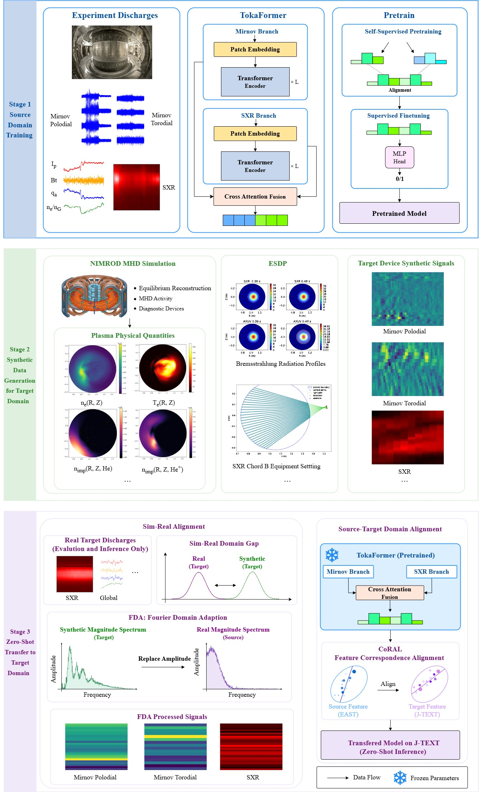

Figure 7: Closed-loop simulation with the experimental FMag mixed controller operating at 10 kHz. Left: X-point position errors Δ r \Delta r (blue) and Δ z \Delta z (red) in cm...
Figure 2: Architecture of the proposed DKEKAN model. The heterogeneous DKE input groups, including F 1 F_{1} , F 2 F_{2} , C 1 C_{1} , and the real and imaginary components of C 2 ...
这篇切中 ITER 早期最现实的问题之一：目标装置没有历史破裂数据时，深度模型怎么启动。它比一般 disruption prediction 论文更接近“跨装置冷启动”。
研究背景
由原简报的核心问题、选取理由和相关性整理，不替代原文背景综述。
ITER 等新装置最早期没有历史破裂样本，且出于安全原因也不能靠“先积累大量 disruption”再训练深度模型。
从本日报的选取理由看，这篇切中 ITER 早期最现实的问题之一：目标装置没有历史破裂数据时，深度模型怎么启动。它比一般 disruption prediction 论文更接近“跨装置冷启动”。
核心问题
ITER 等新装置最早期没有历史破裂样本，且出于安全原因也不能靠“先积累大量 disruption”再训练深度模型。
对当前主题的关键意义在于：对 ITER 冷启动、跨装置迁移、simulation-to-experiment 数据融合尤其关键，也很适合作为“AI + synthetic diagnostics”的代表案例。
方法与关键创新

Figure 1: Overview of the proposed zero-shot cross-device transfer framework for tokamak disruption prediction.
Figure 2: Overview of T2SP . A time series is decomposed into structured components – trend, periods, and events – through a sequential pipeline. Each component, together with its ...
Figure 2 : Progressive-Resolution Causal Autoencoder. Each block applies causal convolution and attention, allowing each latent vector to attend only to the past. At block s s , th...
Figure 1 . Conceptual comparison between traditional time-series generation (TSG) methods and our proposed UPLOTS framework. The left (red frame) illustrates the limitations of con...
![Figure 2: Architecture of the proposed DKEKAN model. The heterogeneous DKE input groups, including F 1 F_{1} , F 2 F_{2} , C 1 C_{1} , and the real and imaginary components of C 2 C_{2} and C 3 C_{3} , are first processed by deterministic group-wise expert pathways. The resulting latent features are concatenated and then passed to a four-layer SKAN backbone to predict the perturbed distribution functions. The lower panel illustrates the structure of a SKAN neuron and its arctangent-based nonlinear mapping used in the backbone.](../assets/figures/e4e3b45c56dabc02.png)
![Figure 2: Overview of T2SP . A time series is decomposed into structured components – trend, periods, and events – through a sequential pipeline. Each component, together with its parameters, is expressed as a symbolic abstract representation of the time series. This program-friendly representation, along with a natural language description of each component and an instruction q q , is then passed to an LLM for downstream tasks. For editing, the LLM outputs an edited structural program representation, which is then reconstructed back into a time series, whereas for captioning and reasoning, it produces a natural language response.](../assets/figures/4b73ac36083a61b1.png)
![Figure 1 . Conceptual comparison between traditional time-series generation (TSG) methods and our proposed UPLOTS framework. The left (red frame) illustrates the limitations of conventional approaches, including task fragmentation , poor generalization due to the need for dataset-specific models. The right (blue frame) shows the improvements of UPLOTS: a unified training pipeline , cross-domain generalization , and prompt-guided adaptability . The integration of the Time-series Prompt Embedding Module (TPEM, green block) enables UPLOTS to flexibly condition on diverse temporal patterns via prompts.](../assets/figures/acf585a4281b69ff.png)